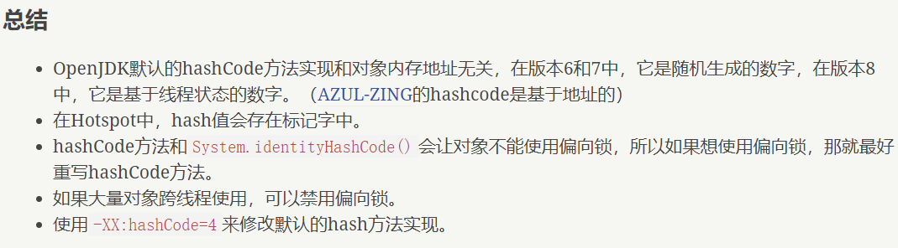

我们知道，Java 对象头的结构如下：
内容 | 说明 | 备注 |
Mark Word | 存储对象的Mark Word信息 | - |
Class Metadata Address | 存储指向对象存储类型的指针 | - |
Array Length | 数组的长度 | 只有数组对象有该属性 |
其中，在32位下，Mark Word 的存储结构如下：

在64位下，Mark Word的存储结构如下：

由此可知，在无锁状态下，Mark Word 中可以存储对象的 identity hash code 值。当对象的 hashCode() 方法（非用户自定义）第一次被调用时，JVM 会生成对应的 identity hash code 值，并将该值存储到 Mark Word 中。后续如果该对象的hashCode() 方法再次被调用则不会再通过 JVM 进行计算得到，而是直接从 Mark Word 中获取。只有这样才能保证多次获取到的 identity hash code 的值是相同的（以jdk8为例，JVM 默认的计算 identity hash code 的方式得到的是一个随机数，因而我们必须要保证一个对象的 identity hash code 只能被底层 JVM 计算一次）。
我们还知道，对于轻量级锁，获取锁的线程栈帧中有锁记录（Lock Record）空间，用于存储 Mark Word 的拷贝，官方称之为 Displaced Mark Word，该拷贝中可以包含 identity hash code，所以轻量级锁可以和 identity hash code 共存；对于重量级锁，ObjectMonitor 类里有字段可以记录非加锁状态下的 mark word，其中也可以存储 identity hash code 的值，所以重量级锁也可以和 identity hash code 共存。
对于偏向锁，在线程获取偏向锁时，会用 Thread ID 和 epoch 值覆盖 identity hash code 所在的位置。如果一个对象的hashCode() 方法已经被调用过一次之后，这个对象还能被设置偏向锁么？答案是不能。因为如果可以的化，那 Mark Word中 的 identity hash code 必然会被偏向线程Id给覆盖，这就会造成同一个对象前后两次调用 hashCode() 方法得到的结果不一致。
HotSpot VM 的锁实现机制是：
当一个对象已经调用默认 hashCode() 或者 System.identityHashCode()，即计算过 identity hash code 后，它就无法进入偏向锁状态。这意味着，如果要在不发生争用的对象上进行同步，则最好覆盖默认hashCode()实现，否则JVM不会优化。
当一个对象当前正处于偏向锁状态，并且需要计算其 identity hash code 的话，则它的偏向锁会被撤销，并且锁会膨胀为轻量级锁或者重量锁；
轻量级锁的实现中，会通过线程栈帧的锁记录存储 Displaced Mark Word；
重量锁的实现中，ObjectMonitor 类里有字段可以记录非加锁状态下的 mark word，其中可以存储 identity hash code 的值。